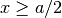

Interactive visualisation of atomic systems with qlab¶
The qlab module provides a pylab-style
interface to quippy and atomeye, and is designed for interactive use,
especially in conjunction with ipython.
Viewing Atoms¶
The most important function defined in this module is view(), which is
used to open a new viewer or to update what is displayed in an existing viewer.
Here’s an example session to give some ideas of how qlab can be used:
from qlab import * # Import all numpy, quippy and atomeye functions
d = diamond(5.44, 14) # Make an 8-atom silicon unit cell
view(d) # Pops up an AtomEye window to display our cell
capture('si8.png') # Capture a screen shot to file "si8.png"

Once a viewer window is open, you can run all the methods of the
atomeye.AtomEyeViewer class as top-level functions in the
which affect the current viewer. This means that you can type, e.g.:
aux_property_coloring("z")
to colour the Atoms being displayed in the current viewer by their
atomic number property, or:
change_bgcolor((0, 0, 0))
resize(640,480)
to change the background colour and size of the window. To redraw the
display, just repeat the view() command.
Custom Atom Colouring¶
The aux_property_coloring() method is
overloaded to allow custom arrays to be visualised, e.g. to highlight
the atoms where :
aux_property_coloring(d.pos[1,:] >= d.lattice[1,1]/2.)

You can quickly find individual atoms or groups of atoms by passing an
integer or list of integers to aux_property_coloring():
aux_property_coloring(1) # highlight first atom (counting from 1 by default)
Note that these indices respect the global fortran_indexing setting
, i.e. they are zero-based if get_fortran_indexing()
returns True and one-based if it returns False.
To read off the properties of an individual atom, right click on it
in the AtomEye window. Again, the starting point for the indices
printed depends on fortran_indexing. The values used for colouring
the atom are in the _show property.
Here is a more advanced example showing how to draw arrows to visualise a vector property (the forces on the atoms), and to colour the atoms by a component of the stress tensor:
d = diamond(5.44, 14) # Make an 8-atom silicon unit cell
s = supercell(d, 5, 5, 5) # Make a supercell of the Si bulk
view(s) # Visualise the system
s.rattle(0.01) # Randomise the atomic positions a little
p = Potential('IP SW') # Make a Stillinger-Weber potential calculator
s.set_calculator(p) # Associate it with our supercell
f = s.get_forces()
draw_arrows(f) # draw vectors on the atoms to represent forces
sigma = s.get_stresses()
aux_property_coloring(sigma[:, 1, 1]) # colour atoms by sigma_yy

Viewing Trajectories¶
You can also pass a list of Atoms objects or a trajectory filename to
view() to visualise a sequence of frames. For example, here’s a
sequence of silicon unit cells with increasing lattice constant:
ds = [diamond(5.44+0.005*x, 14) for x in range(100)]
view(ds)
Use Insert and Delete to move through the frames, or Ctrl+Insert
and Ctrl+Delete to jump to the first/last frame. Note the frame
number is printed in the window title. There are also first(),
last(), forward(), and backward() functions.
There is also a command line script quippy which starts an ipython shell
and imports everything from qlab automatically, and opens
viewers for any file given on the command line, e.g. from the shell
$ quippy traj.nc
will fire up ipython, load everything from
qlab and then open a viewer for the file traj.nc.
When working with large trajectory files, the clip_visible()
function is useful to restrict the number of atoms loaded from disk
and displayed, which can make visualising big systems much more
managable.
There is a gcv() function to get a reference to the current
viewer (short for”get current viewer”, in analogy with
gcf() and gca()
in pylab), and a similarily named gcat()
(“get current atoms”) to get a reference to the current Atoms being viewed.
For a trajectory with multiple frames, this corresponds to the current frame.
You can set the current frame to 10 directly with:
set_frame(10)
Or specify that the frame should advance by 5 steps each time Insert is pressed with:
set_delta(5)
If you would like to make a movie of your simulation, you can use
the render_movie() function:
render_movie('movie.mp4')
This function renders each frame to a .jpg file, before combining the
snapshots with the ffmpeg tool (which needs to
be installed for this to work). There is a hook function which is called at
each frame to allow change to be made to the Atoms object. For example, to run
a 1 ps MD and render the movie of every 10th frame:
d = diamond(5.44, 14) # Usual 8-atom cell
s = supercell(d, 5, 5, 5) # Make a supercell
p = Potential('IP SW') # Make a Stillinger-Weber potential
s.set_cutoff(p.cutoff()+1.) # Neighbour cutoff for atoms is pot cutoff + 1 A
ds = DynamicalSystem(s) # Construct a DynamicalSystem from our Atoms
ds.rescale_velo(1000.) # Set the initial temperature to 1000 K
traj = ds.run(p, 1.0, 1000, save_interval=10) # Run 1 ps of dynamics
view(traj) # Visualise the trajectory: 100 frames long
aux_property_coloring('avg_ke') # Colour atoms by their time-averaged kinetic energy
toggle_aux_property_thresholds_ridid() # Fix the colour scale during movie
toggle_aux_property_thresholds_saturation() # Don't make any atoms invisible
render_movie('traj.mp4') # Make the movie
The movie generated by this script looks like this:
Selecting Atoms¶
The select_atoms() function is useful for graphically selecting a
group of atoms, e.g. to manually define an initial QM region for a
QM/MM calculation. After invoking the function, right
clicking on atoms you want to select. They will be highlighted in red. When you
are done, press Enter. Here’s an example ipython session:
In [9]: view(s)
Reusing viewer named at
Out[9]: <AtomsViewer object at 0x10b9f19d0 fpointer=(-33474560, 32762)>
In [10]: atoms_list = select_atoms()
Right click to select atoms. Press ENTER to finish.
indices = [ 224 265 261
]
If you want to add to the selection, run select_atoms() again with
the reset argument set to False. To customise the value applied to atoms
which are clicked on, use the value argument: e.g. to de-select atoms
clicked on by mistake, you could do:
select_atoms(reset=False, value=False)
By default the selection is saved as a logical property named selection_mask.
This name can be changed with the markname argument, e.g. to set the hybrid
property, you could could use:
qm_list = select_atoms(markname='hybrid', value=HYBRID_ACTIVE_MARK, reset=False)
Multiple Viewers¶
By default a single viewer window is reused for individual Atoms
objects, while a new window is opened for each different trajectory
filename. You can override this with the recycle argument to
view(), e.g. to open a second window for a copy of d:
d2 = d.copy()
view(d2, recycle=False)
You can close a viewer by pressing q when it has the mouse focus.
Each viewer has a name attribute which can be
use to get a reference to it with the get_viewer() function.
For trajectories read from files, the names are derived from the
filename. The default viewer for Atoms objects is named at
and for the default viewers for AtomsList and AtomsReader
objects is called al. get_viewer_names() returns a list of the names af
all the viewers currently open.
Usually referring to the current viewer with gcv() is sufficient,
but you may want to change the default focus for console commands with
scv(), e.g. to set the current viewer to the one visualising the
file traj.nc:
scv(get_viewer('traj'))
Note
qlab combines all the numpy, quippy and atomeye functions
into a single namespace, so from qlab import * is roughly equivalent to:
import numpy as np
from numpy import *
import quippy
from quippy import *
from atomeye import *
Module contents for qlab:
Classes
QuippyViewer(name[, verbose]) |
quippy-specific extensions to AtomEyeViewer |
AtomsViewer([source, name, verbose]) |
Subclass of Atoms and AtomEyeViewer |
AtomsListViewer([source, name, rename]) |
Subclass of AtomsList and AtomEyeViewer |
AtomsReaderViewer([source, name, cache, ...]) |
Subclass of AtomsReader and AtomEyeViewer |
Functions
view(source[, name, recycle, loadall, ...]) |
Read atoms from source and open in an AtomEye viewer window. |
gcv() |
Return the current (most recently created or used) AtomEye viewer instance |
gcat() |
Return the current Atoms object being visualised by the current viewer |
scv(viewer) |
Set the current AtomEye viewer to viewer. |
get_viewer_names() |
Return the current list of viewer names |
get_viewers() |
Return the current list of viewers |
highlight_qm_region([at, run_suffix]) |
Highlight QM region by replacing Si atoms with Al, and O atoms with N, and changing colour of QM atoms to dark blue. |
redraw() |
Redraw current AtomEye window, keeping Atoms and settings the same. |
run_command(command) |
Run a command in current AtomEye thread. |
run_script(script) |
Run commands from the file script, in a blocking fashion. |
close() |
Close the current viewer window. |
setp(self, key, value) |
Run the AtomEye command “set key value” |
save_script(filename) |
Save AtomEye viewer settings to a file. |
toggle_coordination_coloring() |
Turn on or off colouring by coordination number (key “k”) |
translate(axis, delta) |
Translate system along axis by an amount delta (key “Ctrl+left/right/up/down”) |
shift_xtal(axis, delta) |
Shift crystal within periodic boundaries along axis by delta (key “Shift+left/right/up/down”). |
rotate(axis, theta) |
Rotate around axis by angle theta. |
advance(delta) |
Move the camera forward by delta. |
shift_cutting_plane(delta) |
Shift the current cutting plane by an amount delta. |
change_bgcolor(color) |
Change the viewer background colour to color, which should be a RGB tuple with three floats in range 0..1. |
change_atom_r_ratio(delta) |
Change the size of the balls used to draw the atoms by delta. |
change_bond_radius(delta) |
Change the radius of the cylinders used the draw bonds by delta. |
change_view_angle_amplification(delta) |
Change the amplification of the view angle by delta. |
toggle_parallel_projection() |
Toggle between parallel and perspective projections. |
toggle_bond_mode() |
Turn on or off bonds. |
toggle_small_cell_mode() |
Toggle between two different behaviours for when cell is smaller than r_cut/2: 1. |
normal_coloring() |
Return to normal colouring of the atoms (key “o”). |
aux_property_coloring(auxprop) |
Colour the currently viewed atoms according to auxprop. |
central_symmetry_coloring() |
Colour atoms by centro-symmetry parameter. |
change_aux_property_threshold(lower, upper) |
Change the lower and upper aux property thresholds. |
reset_aux_property_thresholds() |
Reset aux property thresholds to automatic values. |
toggle_aux_property_thresholds_saturation() |
Toggle between saturated colouring and invisibility for values outside aux prop thresholds. |
toggle_aux_property_thresholds_rigid() |
Toggle between floating and rigid aux property thresholds when moving between frames |
rcut_patch(sym1, sym2, value[, absolute]) |
Change the cutoff distance for sym1–sym2 bonds by delta. |
select_gear(gear) |
Change the AtomEye gear to gear |
cutting_plane(n, d, s) |
Create a new cutting plane with index n, normal d, and fractional displacement s. |
shift_cutting_plane_to_anchor(n) |
Move the cutting plane with index n to the anchor |
delete_cutting_plane(n) |
Delete the cutting plane with index n |
flip_cutting_plane(n) |
Flip the cutting plane with index n |
capture(filename[, resolution]) |
Render the current view to image filename |
change_wireframe_mode() |
Change the display mode for the unit cell box. |
change_cutting_plane_wireframe_mode() |
Change the display mode for cutting planes |
get_frame() |
Get index of frame currently being viewed |
set_frame(frame) |
Set current frame index to frame |
get_delta() |
Get frame increment rate |
set_delta(delta) |
Set frame increment rate |
first() |
Show the first frame (frame 0). |
last() |
Show the last frame, i.e. |
forward([delta]) |
Move forward by delta frames (default value is gcv().delta). |
backward([delta]) |
Move backward by delta frames (default values is gcv().delta). |
load_atom_color(filename) |
Load atom colours from a .clr file. |
load_aux(filename) |
Load aux property values from a .aux file. |
look_at_the_anchor() |
Equivalent to pressing the a key |
observer_goto() |
Prompt for fractional position and move the observer there |
xtal_origin_goto(s) |
Move the crystal origin to fractional coordinates s |
find_atom(i) |
Set the anchor to the atom with index i. |
resize(width, height) |
Resize the current window to width x height pixels. |
change_aux_colormap(n) |
Select the n-th auxiliary property colourmap. |
draw_arrows(property[, scale_factor, ...]) |
Draw arrows on each atom, based on a vector property |
wait() |
Sleep until current AtomEye viewer has finished processing all queued events. |
get_visible() |
Return list of indices of atoms currently visible in the current viewer. |
clip_visible([orig_index]) |
Remove atoms outside the visible window from the Atoms object. |
select_atoms([reset, markname, value]) |
Select atoms by clicking on them. |
render_movie(moviefile[, start, stop, step, ...]) |
Render a movie for the trajectory. |
set_cutoffs([nneighb_only]) |
Set cutoffs for AtomEye bonds and coordination colouring |
-
class
qlab.AtomsListViewer(source=None, name=None, rename=None, **kwargs)[source]¶ Subclass of AtomsList and AtomEyeViewer
-
class
qlab.AtomsReaderViewer(source=None, name=None, cache=True, verbose=True, rename=None, **kwargs)[source]¶ Subclass of AtomsReader and AtomEyeViewer
-
class
qlab.AtomsViewer(source=None, name=None, verbose=True, **kwargs)[source]¶ Subclass of Atoms and AtomEyeViewer
-
class
qlab.QuippyViewer(name, verbose=True)[source]¶ quippy-specific extensions to AtomEyeViewer
Methods
clip_visible([orig_index])Remove atoms outside the visible window from the Atoms object. render_movie(moviefile[, start, stop, step, ...])Render a movie for the trajectory. select_atoms([reset, markname, value])Select atoms by clicking on them. set_cutoffs([nneighb_only])Set cutoffs for AtomEye bonds and coordination colouring -
clip_visible(orig_index=True)[source]¶ Remove atoms outside the visible window from the Atoms object. Also sets indices for frames not yet loaded from disk.
-
render_movie(moviefile, start=None, stop=None, step=None, hook=None, offset=0, encoder='ffmpeg -i %s -r 25 -b 30M %s')[source]¶ Render a movie for the trajectory.
-
select_atoms(reset=True, markname='selection_mark', value=True)[source]¶ Select atoms by clicking on them. Returns a list of atom indices.
Specify reset=False to modify an existing property. The name of the property is markname (default “selection_mark”) and the value of clicked atoms is given by the value argument (default True).
-
set_cutoffs(nneighb_only=True)[source]¶ Set cutoffs for AtomEye bonds and coordination colouring
Cutoff lengths are set to match quippy
nneightol(if nneighb_only is True, the default) orcutoff(otherwise).
-
show(property=None, frame=None, arrows=None)[source]¶ Update what is shown in this AtomEye viewer window.
property should be the name of the auxiliary property used to colour the atoms (e.g. “charge”) frame is the (zero-based) index of the frame to show. arrows is the name of a vector property to use to draw arrows on the atoms (e.g. “force”)
When called with no arguments, show() is equivalent to redraw().
-
-
qlab.aux_property_coloring(auxprop)[source]¶ Colour the currently viewed atoms according to auxprop.
Overloaded to allow See Custom Atom Colouring for more details and examples.
Parameters: auxprop : str, array_like, int or list
Values to use to colour the atoms. Should be either the name of a scalar field entry in
properties(or equivalently,arrays) such as"charge", a float, int or bool array of shape(len(gcat()),), or an atom index or list of atom indices to highlight particular atoms.
-
qlab.capture(filename, resolution=None)[source]¶ Render the current view to image filename
Format is determined from file extension: .png, .jpeg, or .eps.
-
qlab.change_atom_r_ratio(delta)[source]¶ Change the size of the balls used to draw the atoms by delta.
-
qlab.change_aux_property_threshold(lower, upper)[source]¶ Change the lower and upper aux property thresholds.
-
qlab.change_bgcolor(color)[source]¶ Change the viewer background colour to color, which should be a RGB tuple with three floats in range 0..1.
-
qlab.change_bond_radius(delta)[source]¶ Change the radius of the cylinders used the draw bonds by delta.
-
qlab.change_view_angle_amplification(delta)[source]¶ Change the amplification of the view angle by delta.
-
qlab.change_wireframe_mode()[source]¶ Change the display mode for the unit cell box.
Equivalent to pressing the i key.
-
qlab.clip_visible(orig_index=True)[source]¶ Remove atoms outside the visible window from the Atoms object. Also sets indices for frames not yet loaded from disk.
-
qlab.cutting_plane(n, d, s)[source]¶ Create a new cutting plane with index n, normal d, and fractional displacement s.
-
qlab.draw_arrows(property, scale_factor=0.0, head_height=0.1, head_width=0.05, up=(0.0, 1.0, 0.0))[source]¶ Draw arrows on each atom, based on a vector property
Parameters: property : string
Name of the array to use for arrow vectors. Use
Noneto turn off previous arrows.scale_factor : float
Override length of arrows. 1 unit = 1 Angstrom; default value of 0.0 means autoscale.
head_height : float
Specify height of arrow heads in Angstrom.
head_width : float
up : 3-vector (tuple, list or array)
Specify the plane in which the arrow heads are drawn. Arrows are drawn in the plane which is common to their direction and this vector. Default is
[0.,1.,0.].
-
qlab.get_visible()[source]¶ Return list of indices of atoms currently visible in the current viewer.
-
qlab.highlight_qm_region(at=None, run_suffix='')[source]¶ Highlight QM region by replacing Si atoms with Al, and O atoms with N, and changing colour of QM atoms to dark blue. Can be used as a hook function to render_movie().
If at is None, uses Atoms associated with current viewer (i.e., at = gcat()).
-
qlab.observer_goto()[source]¶ Prompt for fractional position and move the observer there
Equivalent to pressing the g key.
-
qlab.rcut_patch(sym1, sym2, value, absolute=False)[source]¶ Change the cutoff distance for sym1–sym2 bonds by delta.
e.g. to increase cutoff for Si-Si bonds by 0.5 A use:
viewer.rcut_patch('Si', 'Si', 0.5)
With absolute set to True, value is used to set the absolute cutoff distance for sym1–sym2 bonds, e.g.:
viewer.rcut_patch('Si', 'Si', 2.50, True)
-
qlab.render_movie(moviefile, start=None, stop=None, step=None, hook=None, offset=0, encoder='ffmpeg -i %s -r 25 -b 30M %s')[source]¶ Render a movie for the trajectory.
-
qlab.run_command(command)[source]¶ Run a command in current AtomEye thread.
The command is queued for later execution, unless
blockis True.Parameters: command : string
The command to pass to AtomEye
-
qlab.select_atoms(reset=True, markname='selection_mark', value=True)[source]¶ Select atoms by clicking on them. Returns a list of atom indices.
Specify reset=False to modify an existing property. The name of the property is markname (default “selection_mark”) and the value of clicked atoms is given by the value argument (default True).
See also Selecting Atoms
-
qlab.select_gear(gear)[source]¶ Change the AtomEye gear to gear
Equivalent to pressing the one of the numeric keys 0..9
-
qlab.set_cutoffs(nneighb_only=True)[source]¶ Set cutoffs for AtomEye bonds and coordination colouring
Cutoff lengths are set to match quippy
nneightol(if nneighb_only is True, the default) orcutoff(otherwise).
-
qlab.shift_xtal(axis, delta)[source]¶ Shift crystal within periodic boundaries along axis by delta (key “Shift+left/right/up/down”).
-
qlab.toggle_aux_property_thresholds_rigid()[source]¶ Toggle between floating and rigid aux property thresholds when moving between frames
-
qlab.toggle_aux_property_thresholds_saturation()[source]¶ Toggle between saturated colouring and invisibility for values outside aux prop thresholds.
-
qlab.toggle_coordination_coloring()[source]¶ Turn on or off colouring by coordination number (key “k”)
-
qlab.toggle_small_cell_mode()[source]¶ - Toggle between two different behaviours for when cell is smaller than r_cut/2:
- clip cell - some neigbours may be lost (default)
- replicate cell along narrow directions
-
qlab.translate(axis, delta)[source]¶ Translate system along axis by an amount delta (key “Ctrl+left/right/up/down”)
-
qlab.view(source, name=None, recycle=True, loadall=False, inject=True, rename=None, **kwargs)[source]¶ Read atoms from source and open in an AtomEye viewer window.
If not present, name is derived from the filename of source.
If recycle is true (default), try to reuse an exising viewer window with the same name. Otherwise the name is made unique if necesary by appending a number.
If loadall is false (default) we use an AtomsReader to load the frames from the trajectory lazily (i.e., as required). Otherwise the entire file is read into an AtomsList.
If inject is true (default), a new variable called name is injected into the parent stack frame.
 ,
,  and
and  lattice vectors.
lattice vectors.